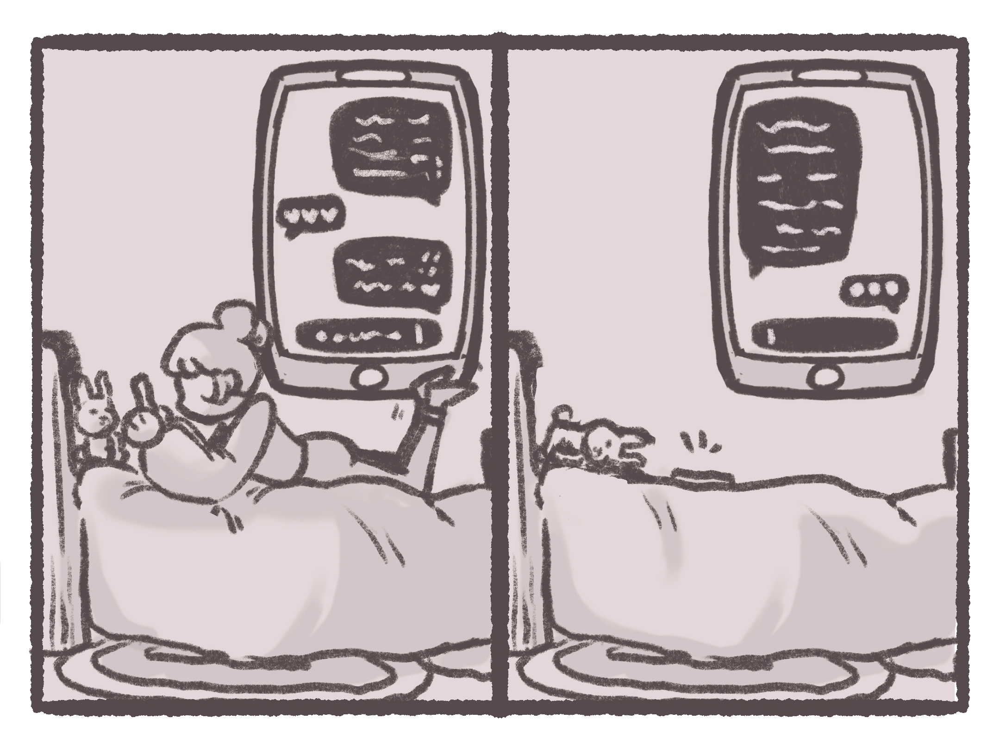
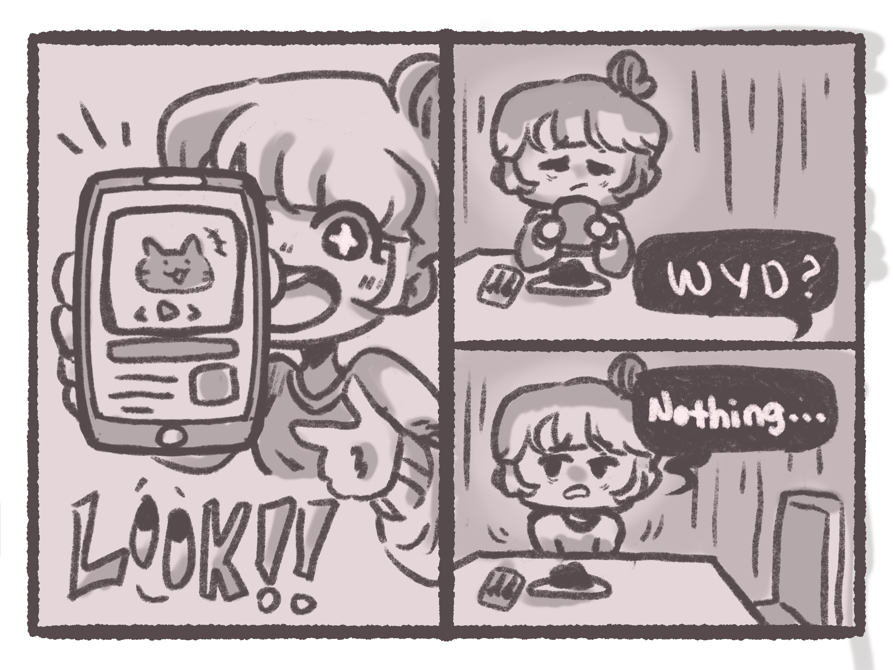
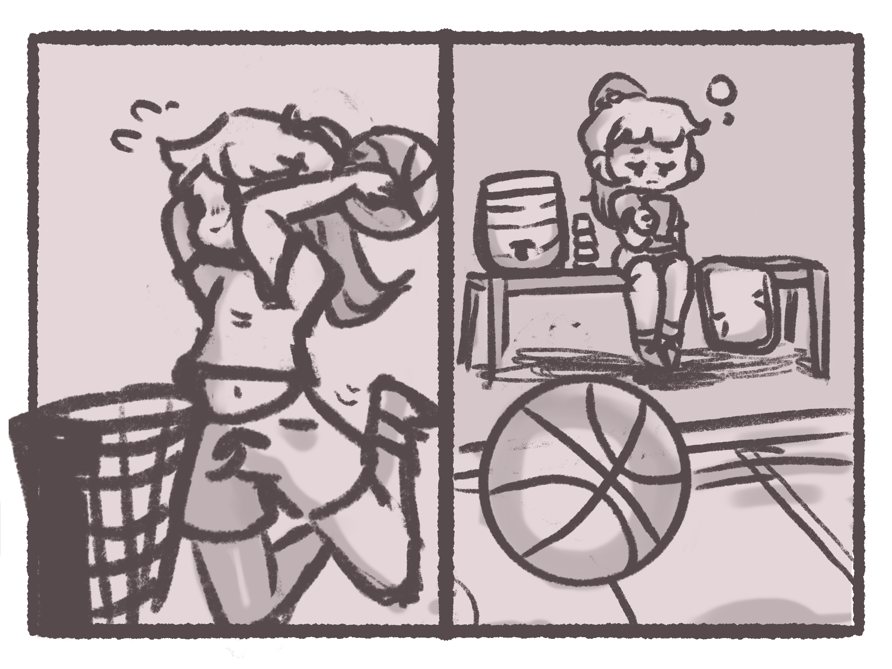
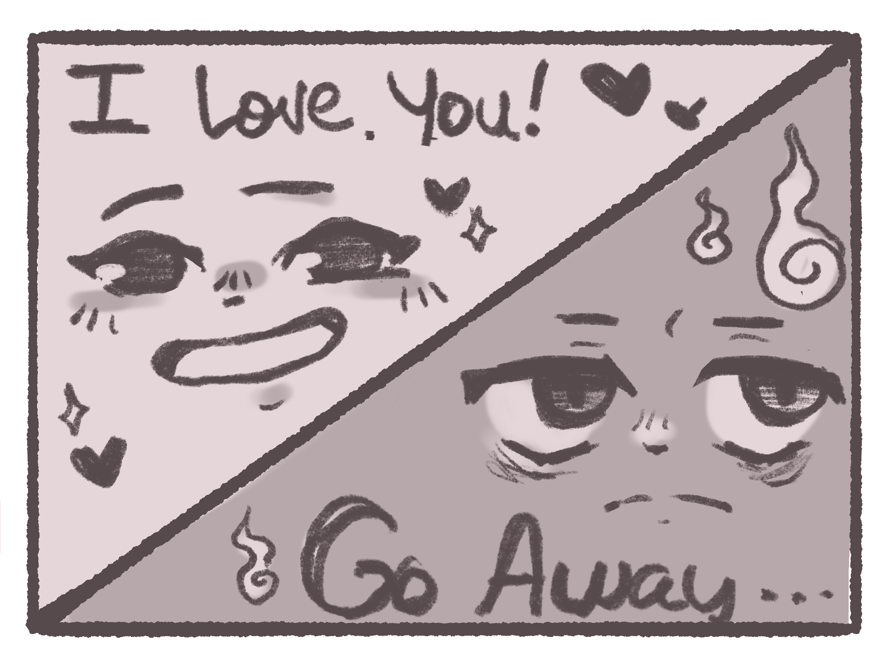
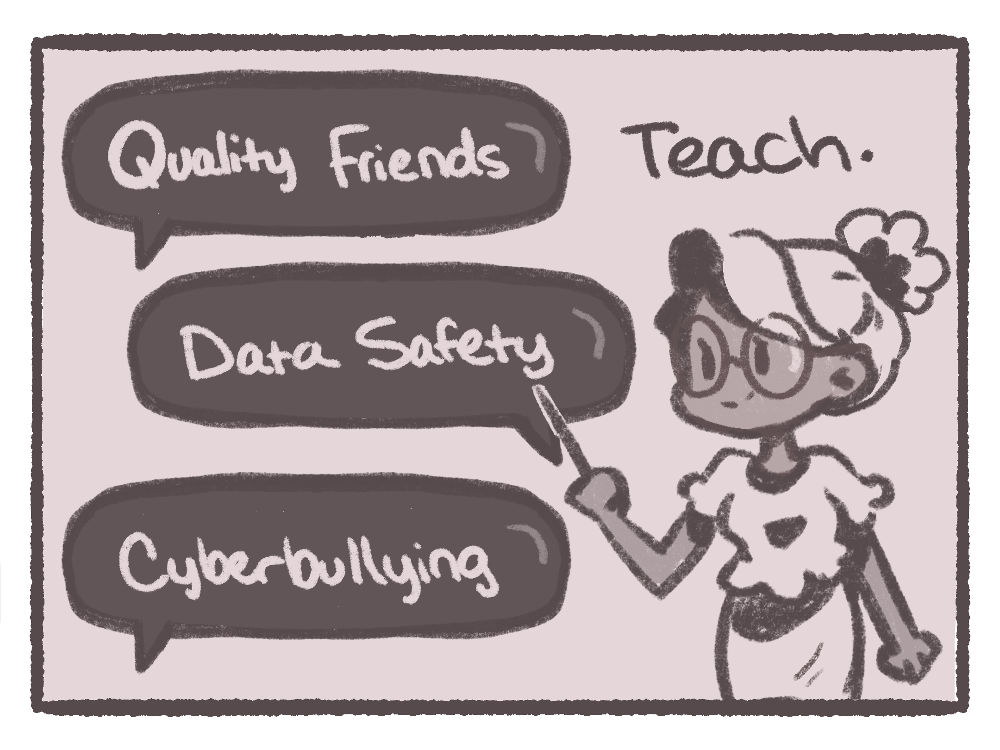
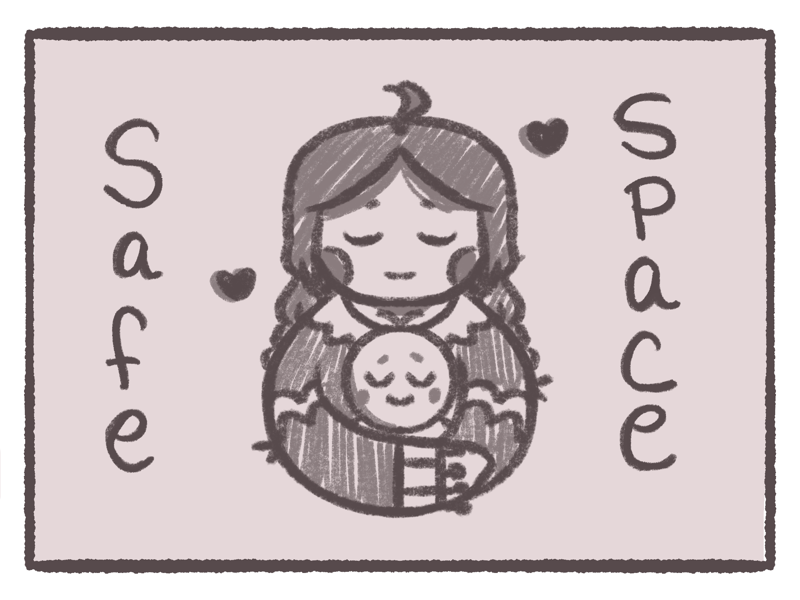
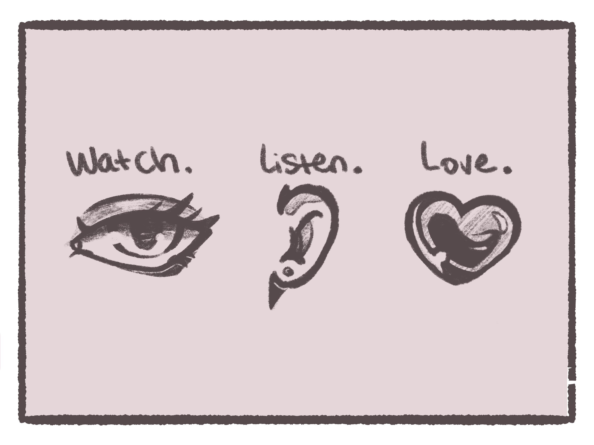
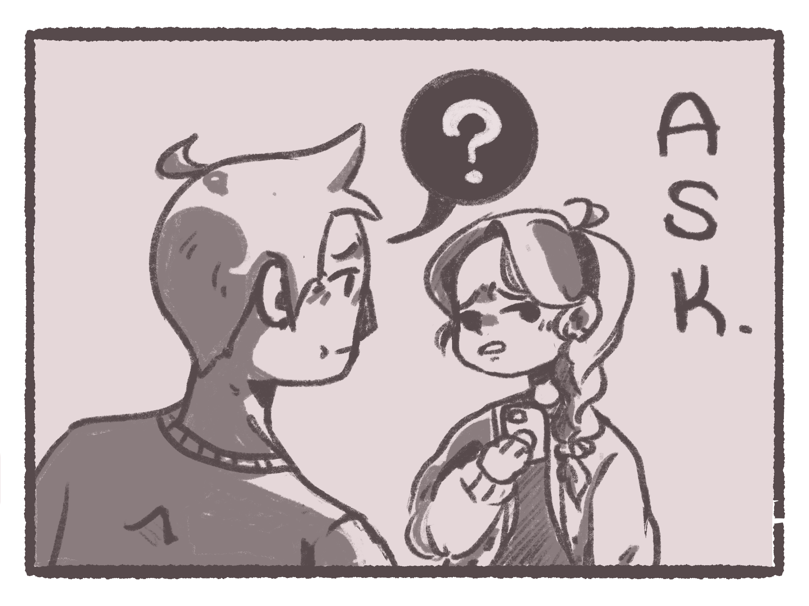
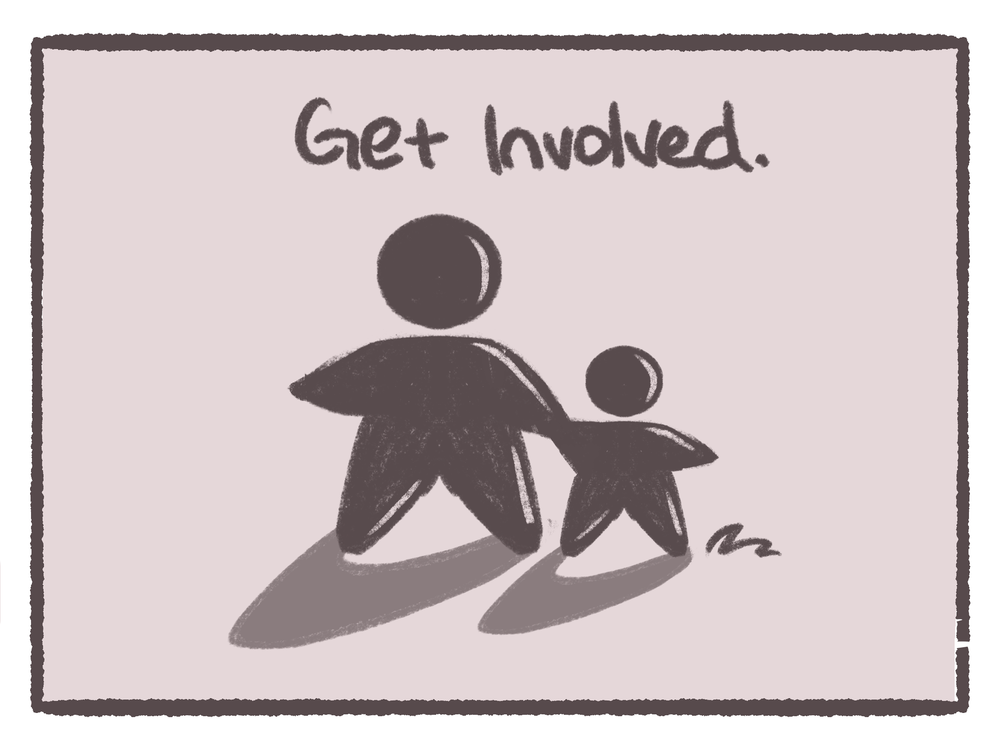

Signs & Symptoms of Cyberbullying
-
Device Disengagement
Sudden Loss of Desire Spells Trouble
Hesitance to use devices or “unplugging” at home can spell trouble! While it might be a nice change of pace, this behavior can indicate that they’re uncomfortable being on their devices, an indicator of cyberbullying.
Social Withdrawal
Look For the Signs, A Kid Doesn’t Change that Fast
Suddenly withdrawal from social media can be a warning sign of cyberbullying. Be aware of what social media platforms they use and their accounts (one or multiple)!
Reluctance for Activities
“June used to love to play…”
Reluctance for passions or hobbies can be concerning! It’s important to be involved and aware of your child’s life. If they seem to be detaching from things they love it can be a sign of bullying or cyberbullying.
Emotional Changes
Know Your Child
It can be hard to tell whether the mood changes your child is facing are because of puberty or something else like cyberbullying, but just keeping an eye out can be an important step for helping your child.
Unwillingness to Communicate

“The hardest part of it all is not knowing how to help when they won’t talk to me..”
Bullying and especially cyberbullying is difficult to handle. Often children fear that adults will just make situations worse, even if they have their best interest in mind.
How Can I Help?
-
Educate
Teach Yourself and Others
Teaching your children how to navigate the world socially and digitally can be super important for keeping them safe and preventing them from getting into bad situations! Teach and show them what real friends look like, how to keep themselves and their information safe in digital environments, and what bullying and cyberbullying might look like.
Safe Space
Everyone Deserves Safety
The world can be a scary place, and it’s up to you to provide your children with a place to come home to and feel safe, welcomed, and loved. By providing your kids with this space, they may feel more inclined to talk to you about difficult situations
Watch, Listen, Love
Communication and Understanding is Key
Sometimes you can’t prevent cyberbullying from happening, so it’s important to.. WATCH your children for signs and symptoms of cyberbullying, LISTEN when your children talk to you, and LOVE. Communicate your concerns with your kids, and make them feel seen and heard.
Ask
Don't be Afraid, Asking is All it Takes
It’s not all about fixing the problem, but rather fixing the problem in the way that makes your children feel the most safe and comfortable. TALK with them, keeping drama as low as possible. ASK them what they want to do. Help them think of solutions.
Get Involved
Be There for Them in the Best Way
It can help to get involved with schools or organizations to prevent cyberbullying from happening to other children in the future. NOTE: Be sure not to bring attention to your children with your involvement. No one wants to relive their bad experiences.